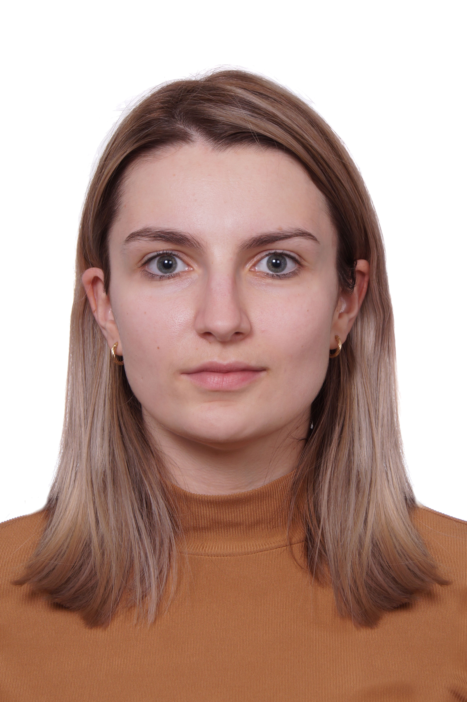

Anna Agnieszka
Anna Agnieszka
Kościkiewicz
 Numer telefonu: +48 795 102 580
Numer telefonu: +48 795 102 580 Email: koscikiewiczanna@gmail.com
Email: koscikiewiczanna@gmail.com Data urodzenia: 18-03-1993
Data urodzenia: 18-03-1993 Miejsce zamieszkania: Nowy Prażmów
Miejsce zamieszkania: Nowy Prażmów